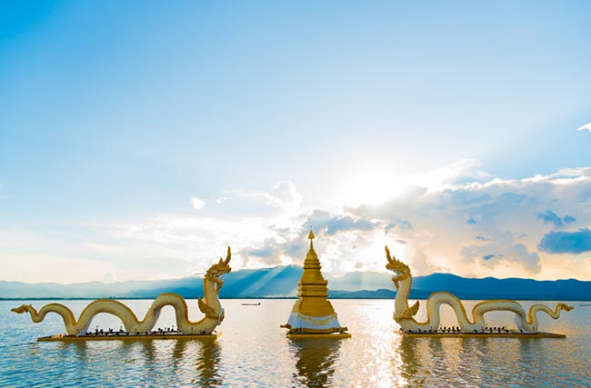
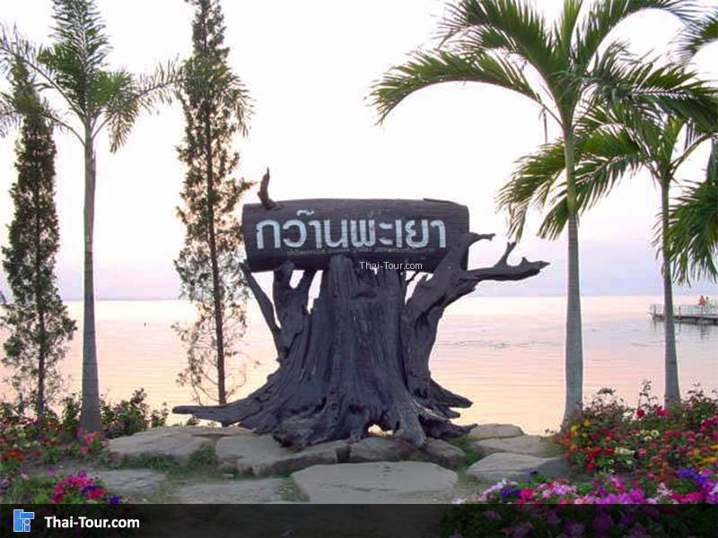
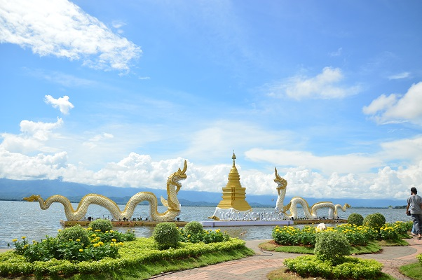

|
กว๊านพะเยา



กว๊านพะเยาสถานที่ท่องเที่ยวอันเป็นเอกลักษณ์แห่งจังหวัดพะเยา "กว๊าน" เป็นภาษาพื้นเมืองล้านนา หมายถึง หนองน้ำ หรือบึงน้ำขนาดใหญ่ ซึ่งกว๊านพะเยาก็ได้ครอบคลุมพื้นที่มากถึง 12,831 ไร่ ตั้งอยู่ในเขตอำเภอเมืองพะเยา มีลักษณะเป็นบึงรูปพระจันทร์เสี้ยวเกือบครึ่งวงกลม มีความลึกเฉลี่ยประมาณ 1.5 เมตร เป็นแอ่งน้ำที่รวบรวมลำห้วยต่าง ๆ 18 สาย ภายในบึงเป็นแหล่งเพาะพันธุ์ปลากว่า 50 ชนิด มีภูเขาโอบล้อมอย่างสวยงาม โดยรอบกว๊านพะเยามีการปลูกต้นไม้อย่างร่มรื่น สวยงาม เป็นสถานที่พักผ่อนหย่อนใจของชาวเมือง รวมทั้งเป็นสถานที่ท่องเที่ยวที่สวยงามมากอีกแห่งหนึ่งของจังหวัดพะเยา

|
|